Chapter 7 Intro to dendro time-series
In this document we cover some of the basic time series tools in dplR. These include spectral analysis using redfit and wavelets. We also show off a few tools in other R packages like fitting AR and ARMA models, and Butterworth filters. However, this is just a tiny glimpse of tree-ring tools that exist in R.
7.1 Introduction
The Dendrochronology Program Library in R (dplR) is a package for dendrochronologists to handle data processing and analysis. This document gives an introduction of some of the functions dealing with time series in dplR and looks at some functions other packages.
However, this document does not purport to be any sort of authority on time series analysis at all! There are many wonderful R-centric books on time series analysis that can tell you about the theory and practice of working with time-series data.
This is kind of a greatest hits of time-series tools that are commonly used in dendro, and not a reference text of any kind.
7.1.1 Load libraries
We will be using dplR in here as well as a few other packages that are useful for working with time-series data. If you haven’t installed these packages yet you will want to using the install.packages() function.
library(dplR)## This is dplR version 1.7.4.
## dplR is part of openDendro https://opendendro.org.
## New users can visit https://opendendro.github.io/dplR-workshop/ to get started.7.2 Data Sets
Throughout this document we will use the on-board data set co021 which gives the raw ring widths for Douglas fir Pseudotsuga menziesii at Mesa Verde in Colorado, USA. There are 35 series spanning 788 years.
data(co021)
co021.sum <- summary(co021)
head(co021.sum)## series first last year mean median stdev skew gini ar1
## 1 641114 1270 1963 694 0.287 0.23 0.231 2.884 0.372 0.686
## 2 641121 1250 1963 714 0.328 0.26 0.315 3.306 0.410 0.744
## 3 641132 1256 1963 708 0.357 0.29 0.337 4.741 0.373 0.686
## 4 641143 1237 1963 727 0.344 0.27 0.287 2.341 0.397 0.708
## 5 642114 1243 1963 721 0.281 0.24 0.219 2.848 0.358 0.673
## 6 642121 1260 1963 704 0.313 0.21 0.416 4.399 0.474 0.865plot(co021, plot.type="spag")
These data are gorgeous with long segments (564), high interseries correlation (0.6), and high first-order autocorrelation (0.85).
Let us make a mean-value chronology of the co021 data after detrending
each series with a frequency response of 50% at a wavelength of 2/3 of
each series’s length.
co021.rwi <- detrend(co021, method="Spline")
co021.crn <- chron(co021.rwi)We can plot the chronology with a smoothing spline with a 20-year period:
plot(co021.crn, add.spline=TRUE, nyrs=20)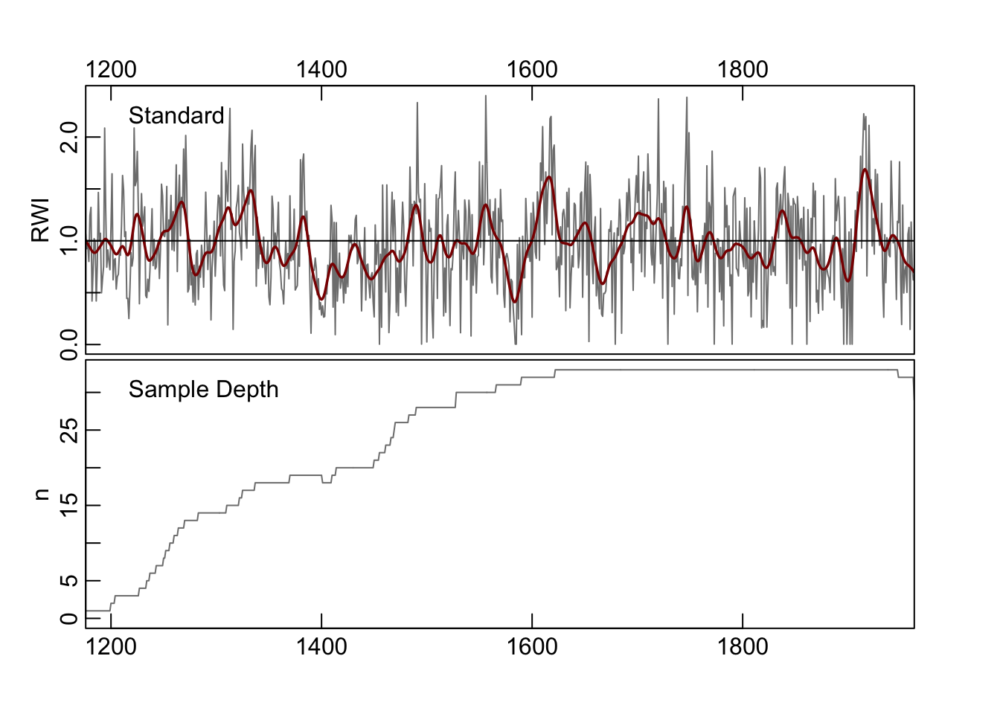
7.3 Smoothing
Very often one wants to smooth data to analyze or work only with particular aspects of the data. This kind of analysis is a big deal in time-series analysis. Smoothing is a way of isolating different frequencies of data but still thinking in the time domain. One such mark that we already alluded to above is the use of smoothing splines to detrend and filter tree-ring data. The urge to smooth a time series when we plot it is almost irresistible. It’s a sickness that dendro folks have. There are many different ways of smoothing and we will look at couple here.
The co021.crn object has two columns, the first giving the chronology
and the second the sample depth during that year. Let’s grab the years and the standard chronology and store them in their own objects.
yrs <- time(co021.crn)
dat <- co021.crn$std7.3.1 Moving (running) average
Centered moving averages (aka running averages) tend to be the first smoothing method that most people learn. Let’s revisit them. These have the advantage of being dirt simple. Below we will see that they emphasize low frequency in the examples below (at 32, 64, and 128 years) but retain some jaggedness too.
We will use the base filter function which is a straightforward convolution filter. As with any function always you can see the help file for details (?filter).
ma32 <- filter(x=dat, filter=rep(x=1/32,times=32), sides=2)
ma64 <- filter(x=dat, filter=rep(x=1/64,times=64), sides=2)
ma128 <- filter(x=dat, filter=rep(x=1/128,times=128), sides=2)
# Change plotting parameters
par(mar=rep(2.5,4),mgp=c(1.2,0.25,0),tcl=0.5, xaxs="i",yaxs="i")
my.cols <- c("#1B9E77", "#D95F02", "#7570B3")
plot(yrs,dat,type="l",xlab="Year",ylab="RWI",col="grey")
abline(h=1)
lines(yrs,ma128, col = my.cols[1], lwd = 2)
lines(yrs,ma64, col = my.cols[2], lwd = 2)
lines(yrs,ma32, col = my.cols[3], lwd = 2)
axis(3);axis(4)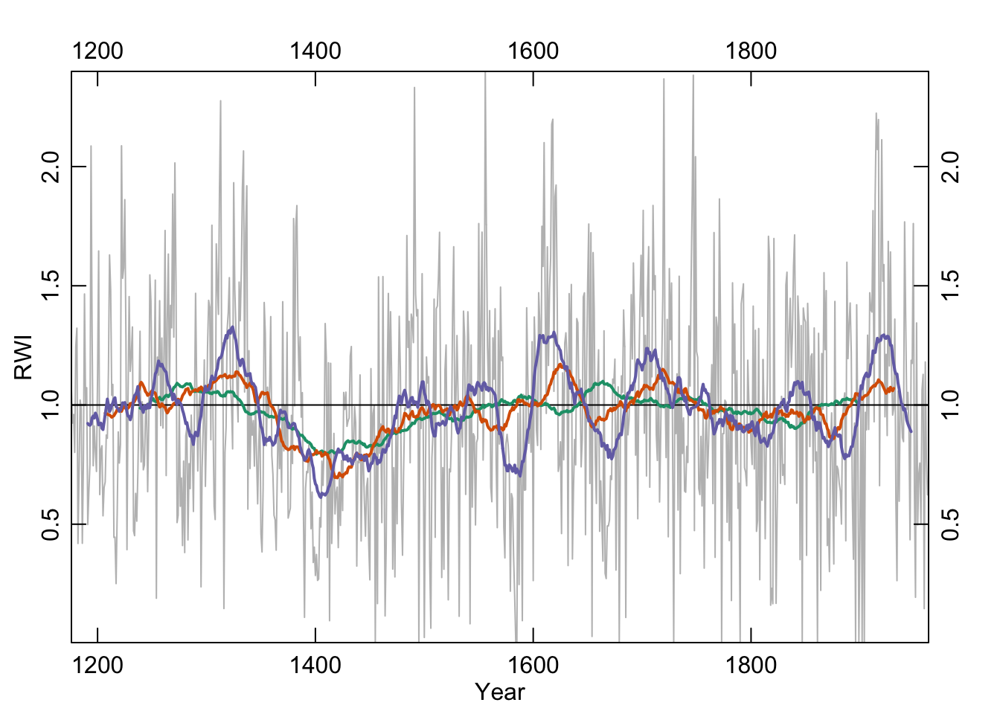
7.3.2 Hanning
The Hanning filter is similar to the moving average in the sense that the curve emphasizes low frequency variability and loses the jaggedness over the moving average. It’s also a simple filter (look at the code by typing hanning at the R prompt) but it also is a start into thinking in the frequency domain. It’s part of a family of functions called window functions that are zero-valued outside of some interval chosen by the user. It’s used quite a bit by time-series wonks and it is implemented in dplR with the function hanning. I’ll skip the theory here but it’s a great precursor to the work we will do with spectral analysis below.
han32 <- hanning(dat,n=32)
han64 <- hanning(dat,n=64)
han128 <- hanning(dat,n=128)
par(mar=rep(2.5,4),mgp=c(1.2,0.25,0),tcl=0.5, xaxs="i",yaxs="i")
plot(yrs,dat,type="l",xlab="Year",ylab="RWI",col="grey")
abline(h=1)
lines(yrs,han128, col = my.cols[1], lwd = 2)
lines(yrs,han64, col = my.cols[2], lwd = 2)
lines(yrs,han32, col = my.cols[3], lwd = 2)
axis(3);axis(4)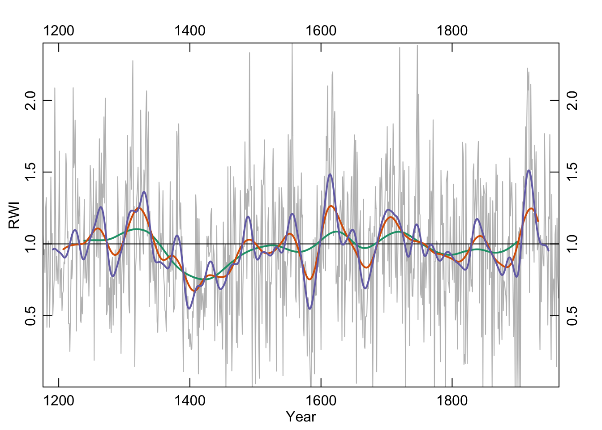
Like the moving average the smooth is shorter than the input data. This is too bad because it is nice to preserve the ends of the data but there is much wringing of hands and gnashing of teeth about the “right” way of running a smoothing algorithm where the data are sparse. This end-member problem is the subject of a lot of work in the time-series literature.
head(data.frame(dat,ma32, han32), n = 20)## dat ma32 han32
## 1 1.0644 NA NA
## 2 0.9241 NA NA
## 3 0.9602 NA NA
## 4 0.8011 NA NA
## 5 1.2448 NA NA
## 6 1.3222 NA NA
## 7 0.4193 NA NA
## 8 0.7125 NA NA
## 9 1.0207 NA NA
## 10 0.9851 NA NA
## 11 0.4199 NA NA
## 12 0.7638 NA NA
## 13 1.4655 NA NA
## 14 1.0005 NA NA
## 15 1.0725 NA NA
## 16 0.4987 0.9226 0.9609
## 17 0.6365 0.9167 0.9648
## 18 0.7509 0.9147 0.9667
## 19 2.0863 0.9205 0.9665
## 20 1.2892 0.9464 0.9644tail(data.frame(dat,ma32, han32), n = 20)## dat ma32 han32
## 769 1.0528 0.9214 0.9836
## 770 0.9065 0.9094 0.9761
## 771 0.4347 0.8989 0.9660
## 772 1.1876 0.8883 0.9533
## 773 1.1743 NA NA
## 774 1.7610 NA NA
## 775 0.6408 NA NA
## 776 0.1934 NA NA
## 777 1.3441 NA NA
## 778 0.4973 NA NA
## 779 0.7076 NA NA
## 780 0.7565 NA NA
## 781 0.5028 NA NA
## 782 1.0647 NA NA
## 783 1.1284 NA NA
## 784 0.1459 NA NA
## 785 1.1805 NA NA
## 786 0.7720 NA NA
## 787 0.6233 NA NA
## 788 0.6441 NA NA7.3.3 Splines
In the world of tree rings, you’ll see frequent mention of cubic smoothing splines and typically a citation for something by Ed Cook who is the greatest quantitative dendrochronologist of all time. His work has left an enduring mark on nearly every aspect of quantitative dendrochronology. For splines, Cook and Peters (1981) is the canonical citation but we would point you to Cook and Kairiukstis (Cook et al., 1990) for an overview. An R implementation of this spline is implemented in dplR with the ffcsaps function which was written in R and also in the caps function which is a wrapper for Cook’s Fortran code. They produce (nearly) identical results. Because caps is quite a bit faster than ffcsaps, dplR uses it by default.
The important argument for users is the nyrs argument which fits a spline of that many “years” to the data. All the functions in dplR assume annual resolution but they don’t really care if you are using data with a different frequency.
spl128 <- caps(dat,nyrs=128)
spl64 <- caps(dat,nyrs=64)
spl32 <- caps(dat,nyrs=32)
par(mar=rep(2.5,4),mgp=c(1.2,0.25,0),tcl=0.5, xaxs="i",yaxs="i")
my.cols <- c("#1B9E77", "#D95F02", "#7570B3")
plot(yrs,dat,type="n",xlab="Year",ylab="RWI",axes=FALSE)
grid(col="black",lwd=0.5)
abline(h=1)
lines(yrs,dat,col="grey",lwd=1)
lines(yrs,spl128,col=my.cols[1],lwd=2)
lines(yrs,spl64,col=my.cols[2],lwd=2)
lines(yrs,spl32,col=my.cols[3],lwd=2)
axis(1);axis(2);axis(3);axis(4)
legend("topright", c("dat", "128yrs", "64yrs", "32yrs"),
lwd = 2, col = c("grey",my.cols),bg = "white")
box()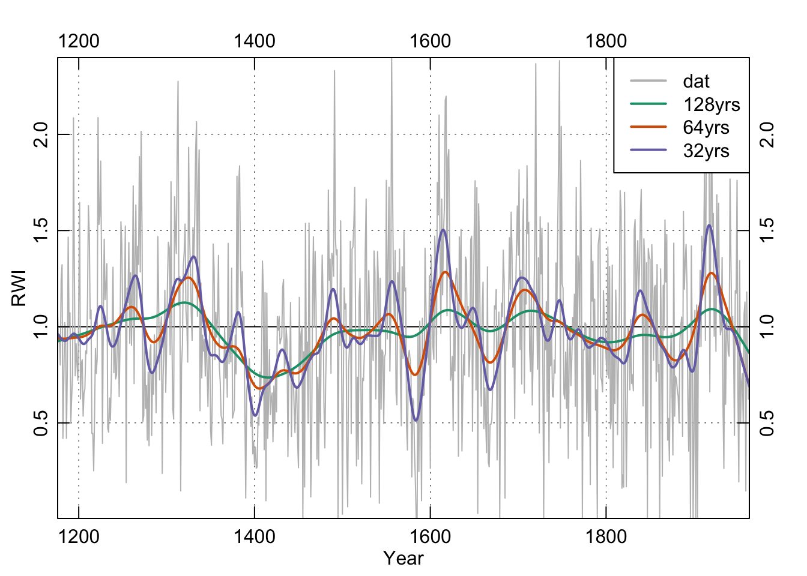
7.3.4 Loess
We will highlight a filter used commonly in time-series analysis but largely ignored in dendro. We’ve become increasingly fond of the loess smoother which uses a local, linear polynomial fit to smooth data. The parameter to adjust is the span f. Because f is the proportion of points used in the smoothing, the smaller the number the less smooth the curve will be. E.g., our series is 788 years long. If we want something that approaches a 25-year smooth we can take 25 over 788 and use 0.0317 of the points in the fit.
n <- length(yrs)
f128 <- 128/n
f128.lo <- lowess(x = yrs, y = dat, f = f128)
f64 <- 64/n
f64.lo <- lowess(x = yrs, y = dat, f = f64)
f32 <- 32/n
f32.lo <- lowess(x = yrs, y = dat, f = f32)
par(mar=rep(2.5,4),mgp=c(1.2,0.25,0),tcl=0.5,xaxs="i",yaxs="i")
plot(yrs,dat,type="n",xlab="Year",ylab="RWI",axes=FALSE)
grid(col="black",lwd=0.5)
abline(h=1)
lines(yrs,dat,col="grey",lwd=1)
lines(yrs,f128.lo$y,col=my.cols[1],lwd=2)
lines(yrs,f64.lo$y,col=my.cols[2],lwd=2)
lines(yrs,f32.lo$y,col=my.cols[3],lwd=2)
axis(1);axis(2);axis(3);axis(4)
legend("topright", c("dat", "f128", "f64", "f32"),
lwd = 2, col = c("grey",my.cols),bg = "white")
box()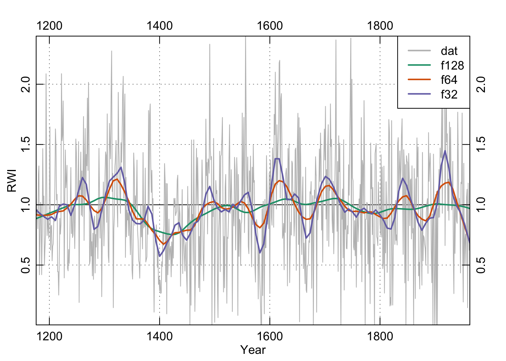
These smoothing lines above are essentially eye candy. We can and will use filtering for more sophisticated analysis below but let’s back up.
7.4 Characterizing Temporal Structure
7.4.1 ACF and PACF
Let’s start with a quick exploratory data analysis into the time-series process. We will start our analysis on the chronology by looking at its autocorrelation structure using R’s acf and pacf functions.
par(mfcol=c(1, 2))
acf(dat)
pacf(dat)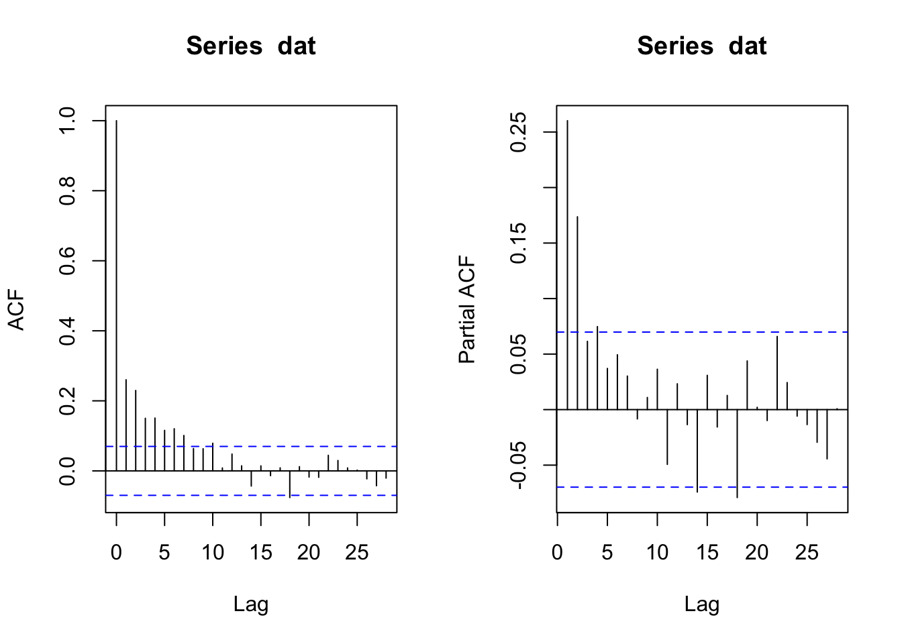
The ACF function indicates significant autocorrelation out to a lag of about 10 years (which is not uncommon in tree-ring data) while the PACF plot suggests that the persistence after lag 4 is due to the propagation of the autocorrelation at earlier lags. And one could very well argue that the best model here is an AR(2) model given the low value of the PACF at lags 3 and 4. After all, you can get three opinions by asking one statistician to look a time series. But we digress.
We now have the first bit of solid information about the time-series properties of these data, it looks like they fit an AR(4) model.
7.4.2 AR and ARMA
But, R being R, there are many other ways to check this. The easiest way is to use the ar function which fits an autoregressive models up to a specified order and selects the final model by AIC.
dat.ar <- ar(dat,order.max = 10)
dat.ar##
## Call:
## ar(x = dat, order.max = 10)
##
## Coefficients:
## 1 2 3 4
## 0.200 0.148 0.046 0.075
##
## Order selected 4 sigma^2 estimated as 0.188Indeed, ar selects an AR(4) model based on AIC. But as our tea-leaf gazing above indicates, an AR(2) model is very close when we look at the AIC values.
plot(0:10,dat.ar$aic,type="b",xlab="AR Order",ylab="AIC",
main="Difference in AIC between each model and the best-fitting model")
A strong argument can be made that a model with fewer parameters (e.g., an AR(2) might serve to characterize the data better than a model with more parameters.
We could also fit these models as ARIMA models individually using the arima function. That function will fit a model with components (p, d, q) as the AR order, the degree of difference, and the MA order. Thus, we could fit AR(1) to AR(4) models:
ar1 <- arima(dat,order=c(1,0,0))
ar2 <- arima(dat,order=c(2,0,0))
ar3 <- arima(dat,order=c(3,0,0))
ar4 <- arima(dat,order=c(4,0,0))
# example output
ar1##
## Call:
## arima(x = dat, order = c(1, 0, 0))
##
## Coefficients:
## ar1 intercept
## 0.260 0.975
## s.e. 0.034 0.021
##
## sigma^2 estimated as 0.195: log likelihood = -473.7, aic = 953.3And then compare the Bayesian Information Criterion (BIC) values:
BIC(ar1,ar2,ar3,ar4)## df BIC
## ar1 3 967.3
## ar2 4 949.9
## ar3 5 953.5
## ar4 6 955.8Here we find evidence for an AR(2) model over the AR(4) mode that the ar function chose. Clearly there is some wiggle room here.
So as we’ve seen, in addition to AR models we can fit their more complicated cousins, ARIMA models, as well. We can do the same sort of automatic selection of the model order by automatically fitting an ARIMA model using the auto.arima function in the package forecast. As with ar, this will choose a model that minimizes an information criterion after searching over user given constraints. We will use the default search parameters and use BIC to select the model.
library(forecast)## Registered S3 method overwritten by 'quantmod':
## method from
## as.zoo.data.frame zoodat.arima <- auto.arima(dat, ic="bic")
summary(dat.arima)## Series: dat
## ARIMA(1,0,1) with non-zero mean
##
## Coefficients:
## ar1 ma1 mean
## 0.827 -0.634 0.974
## s.e. 0.050 0.068 0.032
##
## sigma^2 = 0.187: log likelihood = -457.1
## AIC=922.2 AICc=922.3 BIC=940.9
##
## Training set error measures:
## ME RMSE MAE MPE MAPE MASE ACF1
## Training set 7.679e-05 0.4322 0.3427 -457.9 481.3 0.7942 -0.0004114Even more confusion! Instead of an AR(p) model, auto.arima went for an
ARMA(1,1) model (aka ARIMA(1,0,1)). The parsimony principle certainly likes a nice simple ARMA(1,1) model. Note that we could look at the residuals, model coefficients, etc. quite easily. And indeed the residuals are quite clean as we would expect.
acf(residuals(dat.arima))
This is clearly an incredibly shallow look at a deep topic. Hopefully these will get you started with different tools to characterize temporal structure in data. There are many more resources available and techniques we haven’t covered (e.g., GARCH modelling).
7.5 Frequency Domain
Any time series can be broken down into a (possibly infinite) set of sine and cosine functions. So, a messy looking series like co021.crn is the sum of oscillating functions. The act of breaking these down is exactly what a Fourier transform does. Fourier transforms are everywhere – think JPEGs and MP3s. But we can use them to see what frequencies are important or dominant in a time series.
Someday we will work up the courage to write a tutorial on fast Fourier transforms for dendro using R. It’s hard to know where to start with tackling the subject though as many of the tools that people want for dendro start with fft(dat) but don’t end there. With tree-ring data we often use spectral analysis as a way of detecting periodic signals that are corrupted by noise.
7.5.1 Power via Spectral Analysis and Wavelets
Given the above rationale, we will limit ourselves here to some of the tools that are used in dendro without building these up from the fast Fourier transform itself. In dplR, we’ve implemented two of the most common ways that dendrochronologists go about this and there are a host of other approaches in R that we won’t get to here.
The redfit function in dplR is a port of Schulz’s REDFIT (version 3.8e) program and estimates the red-noise spectrum of a time series (Schulz & Mudelsee, 2002) with optional testing of that spectrum against a red-noise background using Monte Carlo simulations.
redf.dat <- redfit(dat, nsim = 1000)
par(tcl = 0.5, mar = rep(2.2, 4), mgp = c(1.1, 0.1, 0),xaxs="i")
plot(redf.dat[["freq"]], redf.dat[["gxxc"]],
ylim = range(redf.dat[["ci99"]], redf.dat[["gxxc"]]),
type = "n", ylab = "Spectrum", xlab = "Frequency (cycles per year)",
axes = FALSE)
grid()
lines(redf.dat[["freq"]], redf.dat[["gxxc"]], col = "black",lwd=1.5)
lines(redf.dat[["freq"]], smooth.spline(redf.dat[["ci99"]],spar = 0.8)$y, col = "#D95F02")
lines(redf.dat[["freq"]], smooth.spline(redf.dat[["ci95"]],spar = 0.8)$y, col = "#7570B3")
lines(redf.dat[["freq"]], smooth.spline(redf.dat[["ci90"]],spar = 0.8)$y, col = "#E7298A")
freqs <- pretty(redf.dat[["freq"]])
pers <- round(1 / freqs, 2)
axis(1, at = freqs, labels = TRUE)
axis(3, at = freqs, labels = pers)
mtext(text = "Period (year)", side = 3, line = 1.1)
axis(2); axis(4)
legend("topright", c("dat", "CI99", "CI95", "CI90"), lwd = 2,
col = c("black", "#D95F02", "#7570B3", "#E7298A"),
bg = "white")
box()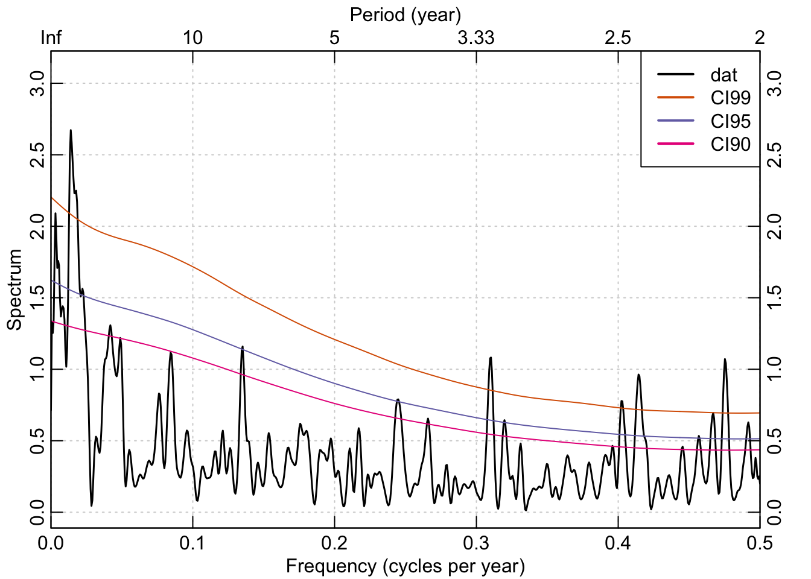
Using the Mesa Verde chronology we see that there are frequencies in that time series that are significantly different from a red-noise assumption in the interannual (<3 years) and at low frequencies (multidecadal).
Another popular way to visualize a tree-ring chronology in the frequency domain is through a continuous wavelet transform. In dplR, there is are functions for calculating the transform via wavelet and plotting the result via wavelet.plot.
out.wave <- morlet(y1 = dat, x1 = yrs, p2 = 8, dj = 0.1,
siglvl = 0.99)
wavelet.plot(out.wave, useRaster=NA, reverse.y = TRUE)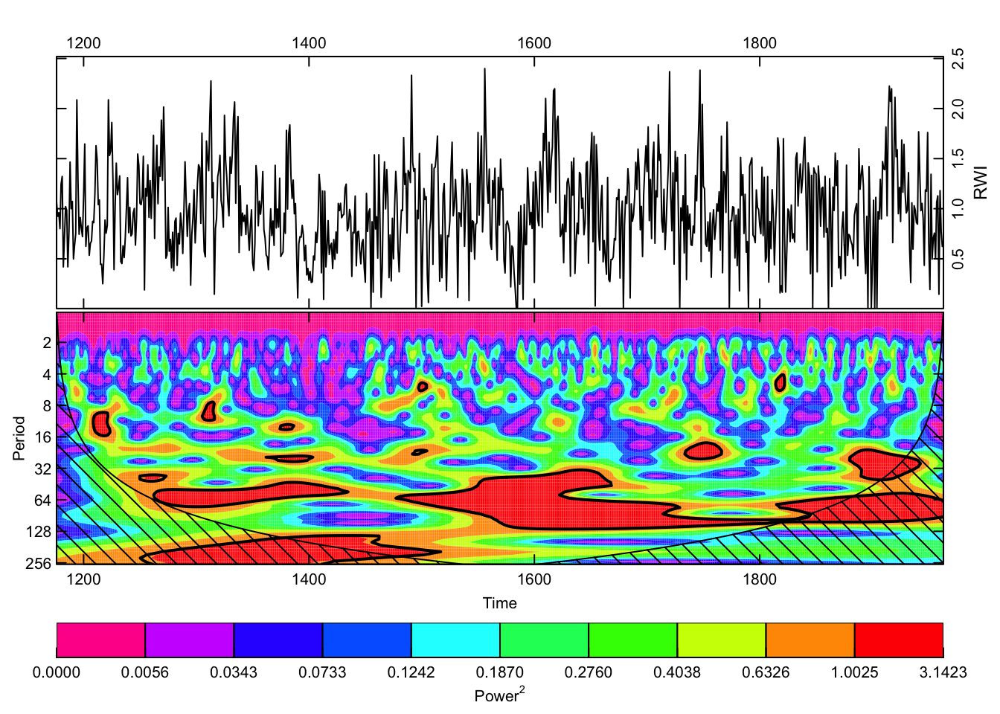
The wavelet plot shows a similar story as the plot from redfit with significant variation at interannual to multidecadal scales.
7.5.2 Extracting signals
Another common task we’ll mention here is extracting specific frequency components from a time series to look at different aspects of say, high vs low frequency growth. One approach to doing this is to use wavelets again but here we will decompose a time series into its constituent voices using a discrete wavelet transform with the mra function in the package waveslim.
library(waveslim)##
## waveslim: Wavelet Method for 1/2/3D Signals (version = 1.8.2)nPwrs2 <- trunc(log(n)/log(2)) - 1
dat.mra <- mra(dat, wf = "la8", J = nPwrs2, method = "modwt",
boundary = "periodic")
yrsLabels <- paste(2^(1:nPwrs2),"yrs",sep="")
par(mar=c(3,2,2,2),mgp=c(1.25,0.25,0),tcl=0.5,xaxs="i",yaxs="i")
plot(yrs,rep(1,n),type="n", axes=FALSE, ylab="",xlab="",
ylim=c(-3,38))
title(main="Multiresolution decomposition",line=0.75)
axis(side=1)
mtext("Years",side=1,line = 1.25)
Offset <- 0
dat.mra2 <- scale(as.data.frame(dat.mra))
for(i in nPwrs2:1){
x <- dat.mra2[,i] + Offset
lines(yrs,x)
abline(h=Offset,lty="dashed")
mtext(names(dat.mra)[[i]],side=2,at=Offset,line = 0)
mtext(yrsLabels[i],side=4,at=Offset,line = 0)
Offset <- Offset+5
}
box()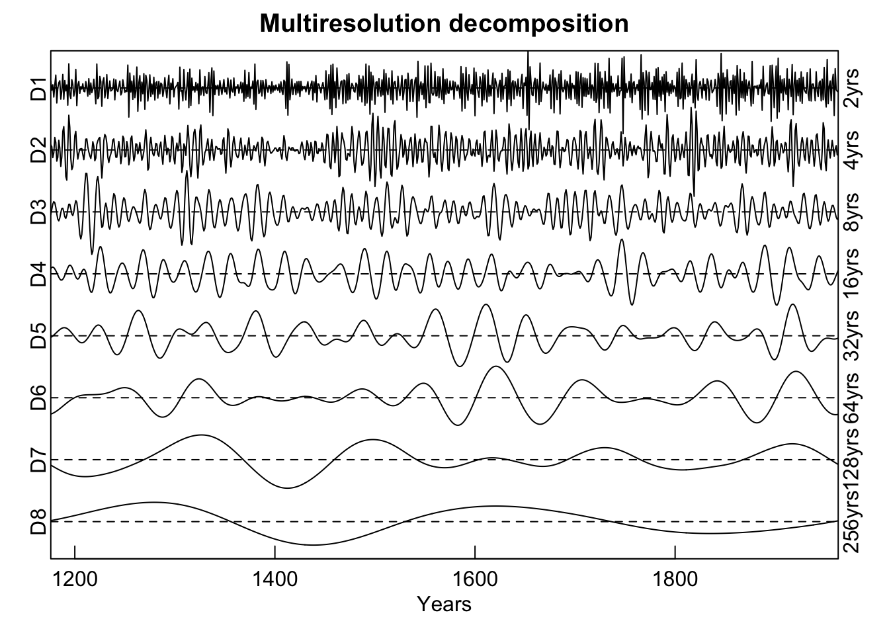
Here the Mesa Verde chronology is shown via an additive decomposition for each power of 2 from \(2^1\) to \(2^8\). Note that each voice is scaled to itself by dividing by its standard deviation in order to present them on the same y-axis. If the scale function were to be removed (and we leave that as an exercise to the reader) the variations between voices would be greatly reduced. Note the similarity in the continuous and discrete wavelet plots for the variation in the 64-year band around the year 1600 and the lower frequency variation at 128 years around the year 1400.
7.5.3 High-pass, low-pass, and bandpass filtering
Another common technique used in tree-ring analysis is to filter data like we did above with moving averages, splines, and so on but doing so in the frequency domain explicitly rather than in the time domain. For instance, we might want to remove the high frequencies from a data set and leave the low frequencies (low-pass filtering) or vice versa (high-pass filtering). Or extract specific frequencies and discard others (band-pass and stop-pass filtering).
Let’s look at the signal library.3
library(signal)##
## Attaching package: 'signal'## The following object is masked from 'package:dplR':
##
## hanning## The following objects are masked from 'package:stats':
##
## filter, polyWe can start low-pass filtering in R with the Butterworth filter. We will fit two 4th order filters with frequencies of 0.2 and 0.05.
# here are two frequencies that we will use for demonstrating filtering
f1 <- 0.2 # period of 5
f2 <- 0.05 # period of 20
# Initialize the butterworth filter.
# Multiply freq by 2
f1Low <- butter(n=4, W=f1*2, type="low")
f2Low <- butter(n=4, W=f2*2, type="low")
# We will use filtfilt do run the filter.
# But before that there is a wrinkle. We have to
# mirror and extend the data near the edge to
# avoid end effects. The matlab/octave versions do something
# like this behind the scenes I think. Regardless, it
# is a simple form of padding.
n <- length(dat)
# create a pas that is adds a 1/4 of the length to the front and
# back of the data. This can be tuned according to the freqs in question
# and there is nothing special about 1/4
pad <- floor(n/4)
# pad the data
datPad <- c(dat[pad:1],dat,dat[n:(n-pad)])
# run the filter
datF1Low <- filtfilt(f1Low, datPad)
datF2Low <- filtfilt(f2Low, datPad)
# unpad the filtered data
datF1Low <- datF1Low[(pad+1):(n+pad)]
datF2Low <- datF2Low[(pad+1):(n+pad)]
par(mar=rep(2.5,4),mgp=c(1.2,0.25,0),tcl=0.5,xaxs="i",yaxs="i")
plot(yrs,dat,type="n",xlab="Year",ylab="",axes=FALSE)
grid(col="black",lwd=0.5)
abline(h=1)
lines(yrs,dat,col="grey80",lwd=1)
lines(yrs,datF1Low,col=my.cols[1],lwd=1.5)
lines(yrs,datF2Low,col=my.cols[2],lwd=2)
axis(1);axis(2);axis(3);axis(4)
legend("topright", c("f < 0.2", "f < 0.05"),
lwd = 2, col = c(my.cols[1:2]),bg = "white")
box()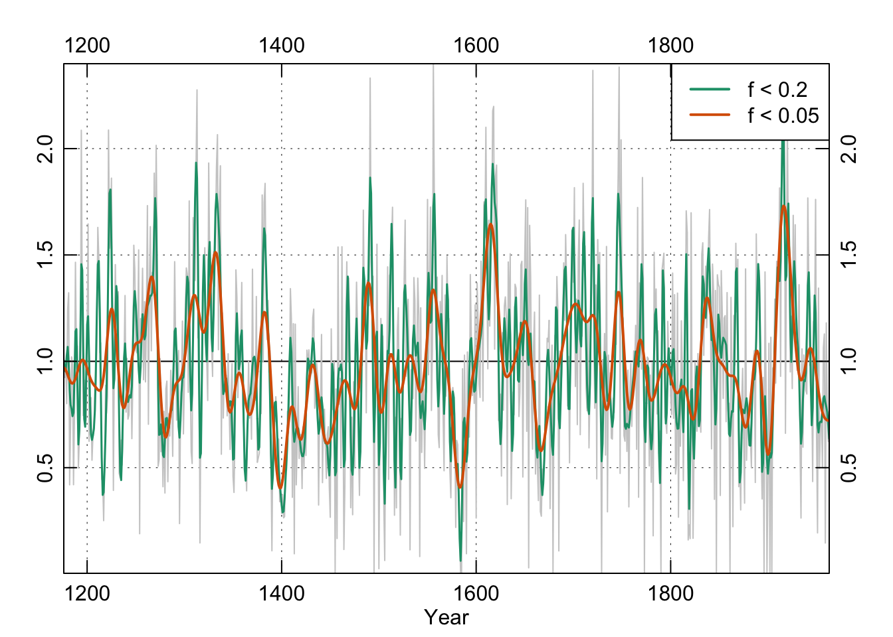
To satisfy ourselves that the low-pass filter did what we thought it should let’s look at the power spectrum of the filtered data for f1:
redf.dat <- redfit(datF1Low, mctest=FALSE)
par(tcl = 0.5, mar = rep(2.2, 4), mgp = c(1.1, 0.1, 0),xaxs="i")
plot(redf.dat[["freq"]], redf.dat[["gxxc"]],
xlim=c(0,0.25),
type = "n", ylab = "Spectrum", xlab = "Frequency (cycles per year)",
axes = FALSE)
grid()
lines(redf.dat[["freq"]], redf.dat[["gxxc"]], col = "black",lwd=1.5)
freqs <- pretty(redf.dat[["freq"]])
pers <- round(1 / freqs, 2)
axis(1, at = freqs, labels = TRUE)
axis(3, at = freqs, labels = pers)
mtext(text = "Period (year)", side = 3, line = 1.1)
axis(2); axis(4)
box()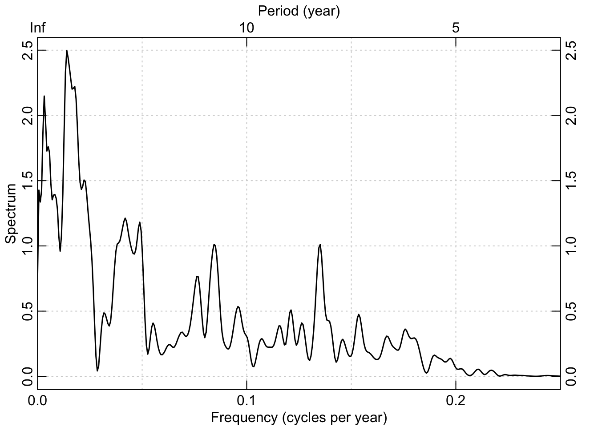
We could repeat this with high-pass filters by changing type="high" when we first make the filter. We could also filter to include only specified frequencies by providing the lower and upper bands. E.g., butter(n=4, W=c(f2,f1)*2, type="pass").
f1f2Pass <- butter(n=4, W=c(f2,f1)*2, type="pass")
datPass <- filtfilt(f1f2Pass, datPad)
datPass <- datPass[(pad+1):(n+pad)]
par(mar=rep(2.5,4),mgp=c(1.2,0.25,0),tcl=0.5,xaxs="i",yaxs="i")
plot(yrs,datPass,type="n",xlab="Year",ylab="",axes=FALSE)
grid(col="black",lwd=0.5)
abline(h=0)
lines(yrs,datPass,col=my.cols[3],lwd=1.5)
axis(1);axis(2);axis(3);axis(4)
legend("topright", "0.05 < f < 0.2",
lwd = 2, col = c(my.cols[3]),bg = "white")
box()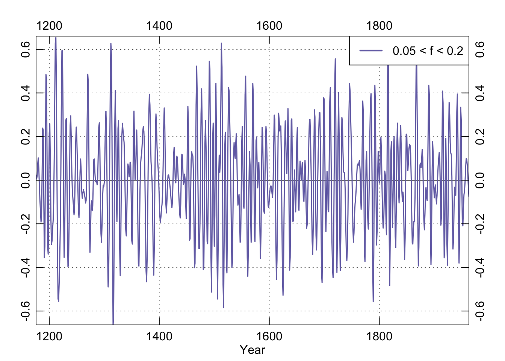
And as above, here is the power spectrum of the band-pass data:
redf.dat <- redfit(datPass, mctest=FALSE)
par(tcl = 0.5, mar = rep(2.2, 4), mgp = c(1.1, 0.1, 0),xaxs="i")
plot(redf.dat[["freq"]], redf.dat[["gxxc"]],
xlim=c(0,0.25),
type = "n", ylab = "Spectrum", xlab = "Frequency (cycles per year)",
axes = FALSE)
grid()
lines(redf.dat[["freq"]], redf.dat[["gxxc"]], col = "black",lwd=1.5)
freqs <- pretty(redf.dat[["freq"]])
pers <- round(1 / freqs, 2)
axis(1, at = freqs, labels = TRUE)
axis(3, at = freqs, labels = pers)
mtext(text = "Period (year)", side = 3, line = 1.1)
axis(2); axis(4)
box()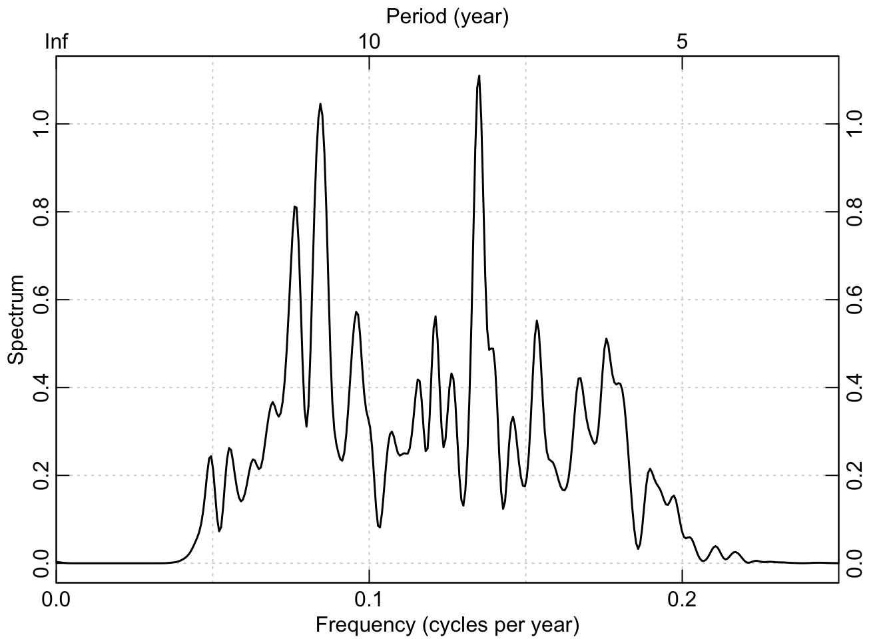
7.5.4 Interruption: Duplicate function names
Take a moment to look back at the messages given off from loading signal. There are times when two packages will have the same function names. For instance both the signal package and dplR have a function called hanning (which applies the hanning filter to a time series). When two libraries are loaded that have two functions with the same name, R has to decide which to use when the function is called from the command line. Thus if we type hanning at the prompt we will get the `hanning function from the signal library. Because signal was loaded after dplR the hanning function from signal gets primacy. The same goes for the signal functions filter and poly which have counterparts the library stats which is loaded when R is first started.
This dual name phenomenon can occasionally (but only occasionally) be a hindrance if you forget that it has happened. For instance, the function hanning in signal doesn’t do the same thing as the function hanning does in dplR. If you were expecting the behavior of one and got the other you might break your scripts, confuse yourself, and spend time tracking down the error. So, pay attention to masking when you load a package.
We can still access dplR’s version of hanning via dplR::hanning if you want it. The same goes for stats::filter, stats::poly, and so on.
But note the information on name masking that gets spit out when we do – see explanation in the next section.↩︎